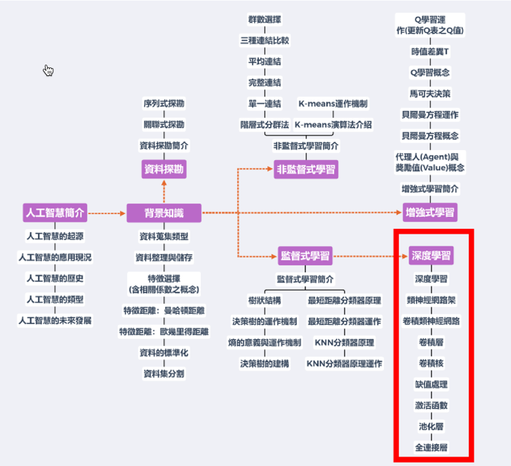

深度學習計畫數位教材製作
Table of Contents
1. 教材架構

Figure 1: 高中深度學習數位教材
2. 工作分配
2.1. 涂益郎、宋承彥
深度學習簡介、類神經網路、卷積類神經網路、卷積層、卷積核、缺值處理
2.2. 顏永進、許柏浤
激活函數、池化層、全連接層、實作1、實作2
2.4. 問題
- 每支影片4個問題，這些問題是要嵌入影片中問還是看完一次問，是要像WSQ學習單那一類的問題？還是要用來評估學生能力的？
- 腳本的來源是否要based on“和AI做朋友”？或是自行編製？
- 最後是交word/pdf還是ppt?
3. 激活函數腳本
3.1. 前言
3.2. 什麼是函數
3.3. 為什麼需要激活函數
3.4. 什麼是激活函數
3.5. Article to read
3.5.1. why
There is one nice attribute of Softmax as compared with standard normalisation.
It react to low stimulation (think blurry image) of your neural net with rather uniform distribution and to high stimulation (ie. large numbers, think crisp image) with probabilities close to 0 and 1.
While standard normalisation does not care as long as the proportion are the same.
Have a look what happens when soft max has 10 times larger input, ie your neural net got a crisp image and a lot of neurones got activated
>>> softmax([1,2]) # blurry image of a ferret [0.26894142, 0.73105858]) # it is a cat perhaps !? >>> softmax([10,20]) # crisp image of a cat [0.0000453978687, 0.999954602]) # it is definitely a CAT !
And then compare it with standard normalisation
>>> stdnorm([1,2]) # blurry image of a ferret [0.3333333333333333, 0.6666666666666666] # it is a cat perhaps !? >>> stdnorm([10,20]) # crisp image of a cat [0.3333333333333333, 0.6666666666666666] # it is a cat perhaps !?
4. 池化層
4.1. Gray mage to unsigned int matrix
1: from PIL import Image 2: import numpy as np 3: 4: im = np.array(Image.open('images/32eye.png').convert('L')) 5: print(im)
>>> >>> >>> >>> >>> [[169 177 185 188 189 177 159 140 125 117 93 82 85 79 71 68] [212 217 216 207 195 183 168 152 141 127 112 99 87 77 74 72] [225 227 221 212 205 187 172 157 141 125 110 98 84 73 73 71] [232 232 226 220 209 192 175 154 137 115 101 88 75 67 64 62] [234 233 216 203 192 161 129 99 79 59 48 45 49 56 60 60] [222 210 199 158 152 116 81 59 46 38 38 24 11 17 37 62] [190 161 126 76 47 35 34 29 27 30 37 34 33 23 13 29] [193 94 70 161 114 65 88 51 29 51 79 53 36 44 37 20] [ 85 101 200 250 123 173 199 33 0 47 91 69 39 36 59 53] [151 171 187 245 169 99 161 104 63 90 123 68 40 28 38 83] [211 193 176 202 231 101 86 136 116 126 97 43 31 16 34 86] [225 218 209 190 191 171 85 64 63 71 70 69 50 41 48 65] [232 231 226 209 187 166 147 128 110 103 93 85 77 83 87 85] [236 233 227 227 209 203 190 167 146 127 102 94 91 95 95 97] [237 235 232 225 228 226 210 188 166 143 116 107 101 96 93 95] [238 236 233 230 223 216 201 186 168 154 138 126 109 99 95 104]] >>>
4.2. table
| 169 | 177 | 185 | 188 | 189 | 177 | 159 | 140 | 125 | 117 | 93 | 82 | 85 | 79 | 71 | 68 |
| 212 | 217 | 216 | 207 | 195 | 183 | 168 | 152 | 141 | 127 | 112 | 99 | 87 | 77 | 74 | 72 |
| 225 | 227 | 221 | 212 | 205 | 187 | 172 | 157 | 141 | 125 | 110 | 98 | 84 | 73 | 73 | 71 |
| 232 | 232 | 226 | 220 | 209 | 192 | 175 | 154 | 137 | 115 | 101 | 88 | 75 | 67 | 64 | 62 |
| 234 | 233 | 216 | 203 | 192 | 161 | 129 | 99 | 79 | 59 | 48 | 45 | 49 | 56 | 60 | 60 |
| 222 | 210 | 199 | 158 | 152 | 116 | 81 | 59 | 46 | 38 | 38 | 24 | 11 | 17 | 37 | 62 |
| 190 | 161 | 126 | 76 | 47 | 35 | 34 | 29 | 27 | 30 | 37 | 34 | 33 | 23 | 13 | 29 |
| 193 | 94 | 70 | 161 | 114 | 65 | 88 | 51 | 29 | 51 | 79 | 53 | 36 | 44 | 37 | 20 |
| 85 | 101 | 200 | 250 | 123 | 173 | 199 | 33 | 0 | 47 | 91 | 69 | 39 | 36 | 59 | 53 |
| 151 | 171 | 187 | 245 | 169 | 99 | 161 | 104 | 63 | 90 | 123 | 68 | 40 | 28 | 38 | 83 |
| 211 | 193 | 176 | 202 | 231 | 101 | 86 | 136 | 116 | 126 | 97 | 43 | 31 | 16 | 34 | 86 |
| 225 | 218 | 209 | 190 | 191 | 171 | 85 | 64 | 63 | 71 | 70 | 69 | 50 | 41 | 48 | 65 |
| 232 | 231 | 226 | 209 | 187 | 166 | 147 | 128 | 110 | 103 | 93 | 85 | 77 | 83 | 87 | 85 |
| 236 | 233 | 227 | 227 | 209 | 203 | 190 | 167 | 146 | 127 | 102 | 94 | 91 | 95 | 95 | 97 |
| 237 | 235 | 232 | 225 | 228 | 226 | 210 | 188 | 166 | 143 | 116 | 107 | 101 | 96 | 93 | 95 |
| 238 | 236 | 233 | 230 | 223 | 216 | 201 | 186 | 168 | 154 | 138 | 126 | 109 | 99 | 95 | 104 |
5. 全連接層
6. 實作1
What is the difference between these two modes?